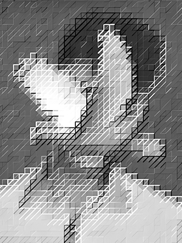

Currently
Previously
Summary
Láyon holds a degree in Applied Mathematics from Ateneo de Manila University. Upon graduation, they received the Mulry Award for Literary Excellence and the Ateneo College Awards of the Arts in Poetry. They are also a recipient of the National Youth Achievement in Literary Arts, awarded by the National Committee on Literary Arts.
They’re an active member of Linangan sa Imahen, Retorika, at Anyo (LIRA), and their work has appeared in the regular issues of HEIGHTS, Ateneo’s literary publication, where they also served as managing editor. Their academic and creative interests lie at the confluence of artificial intelligence, language, and the posthuman.
They thought they’d end up marrying mathematics, but then poetry came along, and suddenly, they couldn’t decide which to commit to.
Hanggang ngayon, hinahanap niya pa rin ang sariling layon.
Email: layon.connect@gmail.com
TLDTD: tldtd.org/poet/layon